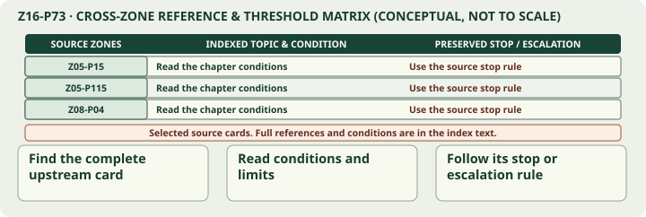

Z16-P73 · Field reference atlas · New manuscript
Open Authentic Diagnostic Photography and Visual Redesign Index
Summarize the open authentic diagnostic photography register, documentary context assets, and Astra A02 visual redesign backlog honestly.
When it applies · Visual QA, curator acquisition planning, and publication-gate transparency.
Equipment · Full offline reader (Z01–Z16), primary zone cards, and local emergency and agency references.

Actions
- Keep documentary context photographs (provider JPEGs with SHA-256, public-domain credit, and diagnostic_photo=false in photos manifest.json) strictly separate from expert-validated diagnostic photographs (currently 0 acquired).[A10, B02]
- Track all 54 open authentic diagnostic photography requirements in photo-requirements.tsv (35 A01–A02 baseline requirements across Z02–Z15 PLUS 19 new P16–P20 requirements across Z08, Z06, Z07, and Z05).[A10, B02]
- Preserve Astra A02 visual quality classification and 490-candidate baseline visual redesign register alongside P16–P20 domain-specific diagram expansions, never presenting conceptual SVG illustrations as diagnostic photographs or consumption, engineering clearances.[A10, B24]
Failure recognition · Mislabeling a conceptual vector or documentary context photo as diagnostic specimen proof misleads identification and violates publication controls.[A10, B02, B24]
Verify · Every SVG carries CONCEPTUAL NOT TO SCALE labeling, all photo checksums verify, and all 54 diagnostic needs remain visibly OPEN.[A10, B02]
Stop or change course · Stop advancing any high-risk visual identification zone out of HOLD until rights-cleared, multi-view, expert-validated diagnostic photographs are acquired.[A10, B02, B24]
Evidence and editorial notes
- A10 · FEMA / Ready.gov · Make a Plan (current web edition)
- Section: Offline reader navigation, historical lineage, and HOLD transparency · Conditions: Using the complete 16-zone offline archive, zone readers, and print proofs
Support: Navigation aids expose draft status, reconstruction lineage, open diagnostic photo needs, and pending specialist holds on every lookup path.
Limitations: Automated validation checks structure and citations only; publication remains HOLD until qualified human review completes. · Conflicting evidence: None noted.
Editorial note: Anchors Z16 offline navigation & governance index. · Specialist reviewer: Accessibility, print QA, and editorial reviewer
Primary source · checked 2026-11-24 - B02 · Bell Museum (UMN) · Bell Museum Specimen Collections Portal (Current web edition)
- Section: Curated herbarium and fungarium voucher specimen standards · Conditions: Corroborating species traits against documented physical vouchers
Support: Curated herbarium and fungarium vouchers link accepted scientific names, collection locality, habitat, and morphology to verifiable specimens.
Limitations: Image-search labels and crowd-sourced guesses cannot substitute for vouchered keys and qualified taxonomic review. · Conflicting evidence: None noted.
Editorial note: Core P19-A voucher discipline. · Specialist reviewer: Herbarium / fungarium curator
Primary source · checked 2026-11-25 - B24 · CDC MMWR · Notes from the Field: Severe Mushroom Poisoning — Minnesota 2018 (MMWR 68(21))
- Section: Rejection of folklore edibility tests and AI-only visual clearance · Conditions: All wild plant, berry, root, and fungal screening
Support: Universal skin/lip rub tests, silver-spoon tests, animal-browsing observations, single photos, and generated illustrations never establish edibility.
Limitations: If any diagnostic feature, site-contamination history, or expert review is missing, consumption remains strictly WITHHELD. · Conflicting evidence: None noted.
Editorial note: Enforces Z05 fail-closed edibility rule. · Specialist reviewer: Botanist, mycologist, and clinical toxicologist
Primary source · checked 2026-11-25
Source lineage · New manuscript (Z16 P20 visual governance) · Classification · New manuscript.